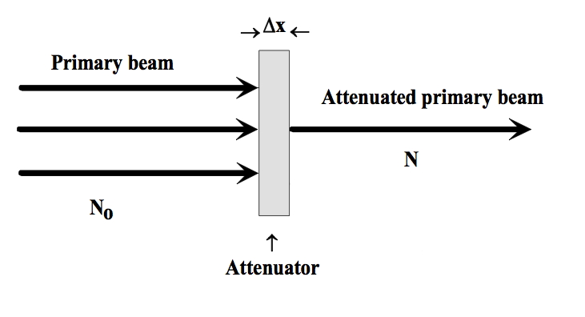
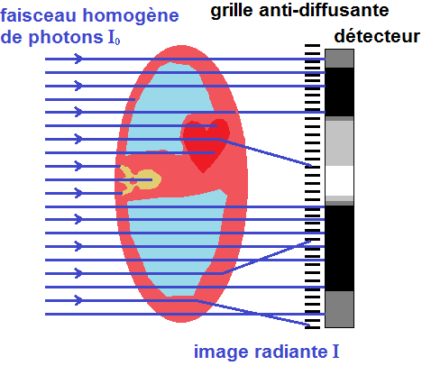

When X-rays enter the body, they do not all pass straight through to the detector.
Some X-rays are absorbed by the tissues, while others are scattered in different directions. The rest continue through the body and may reach the detector.
Because of these interactions, the X-ray beam becomes weaker as it passes through the body.
This reduction in the intensity of the X-ray beam is called radiation attenuation.
What Happens to an X-ray Photon Inside the Body?
Imagine that 100 X-ray photons enter the patient's body.
As they travel through the tissues, different things can happen:
- Some photons are absorbed by the tissue.
- Some photons are scattered and change direction.
- Some photons pass through the body without interacting and continue toward the detector.
So, if only 60 photons continue toward the detector, the beam has been attenuated.
The important idea is that attenuation means that fewer useful photons remain in the original X-ray beam after it has passed through the body.

Why Don't All Tissues Attenuate X-rays the Same Way?
This is one of the most important parts of attenuation.
Different tissues interact with X-rays differently. The amount of attenuation depends on factors such as the composition and density of the tissue, the thickness of the material, and the energy of the X-ray photons.
For example, think about three different areas:
Air → very little attenuation
Soft tissue → more attenuation
Bone → much greater attenuation
This means that an X-ray beam passing through the chest does not lose the same number of photons everywhere.
It may pass through a large amount of air in the lungs with relatively little attenuation, while the ribs attenuate the beam much more.
A Simple Example
Imagine shining a light through three objects:
- A clear glass
- A thick piece of plastic
- A thick wooden board
The light would pass through the glass easily, but much less light would get through the wood.
X-rays behave in a similar way when they pass through different materials.
The important difference is that X-rays can pass through the body, allowing us to record the differences on a detector.
Less attenuation → more X-rays reach the detector.
More attenuation → fewer X-rays reach the detector.
Absorption, Scatter, and Transmission
You may come across these three terms when studying attenuation.
1. Absorption
The X-ray photon interacts with matter and is absorbed rather than continuing through the patient.
One important example is the photoelectric effect, in which the X-ray photon is completely absorbed.
2. Scatter
The X-ray photon interacts with the body and changes direction.
In diagnostic imaging, Compton scattering is an important source of scattered radiation. Scattered photons can move away from the original beam and may also contribute unwanted radiation reaching the detector.
3. Transmission
Some photons pass through the patient and reach the detector.
These transmitted photons carry information about the tissues the beam has passed through and help form the radiographic image.
So you can think of it like this:
How Does Attenuation Create an X-ray Image?
Now we reach the part that makes attenuation really important.
Suppose an X-ray beam passes through two different parts of the body.
One area may cause more attenuation, while another causes less attenuation.
Therefore, different numbers of X-ray photons reach the detector from those two areas.
The detector records these differences, and they contribute to the differences we see in the X-ray image. The amount of attenuation between different tissues is therefore an important part of subject contrast.
For example, bone attenuates X-rays much more than the air inside the lungs.
That is why the detector receives very different signals from these areas, allowing them to appear differently on the radiograph.

What Happens If the Body Part Is Thicker?
Thickness also matters.
Imagine taking an X-ray through a thin part of the body and then through a much thicker part.
The X-rays travelling through the thicker part have more tissue to pass through, so there are more opportunities for interaction.
As a result, fewer photons may reach the detector.
So, in simple terms:
This is one reason why exposure factors may need to be adjusted for different body parts and patient sizes.
Does X-ray Energy Affect Attenuation?
Yes.
The energy of the X-ray photons affects how they interact with matter. In diagnostic imaging, the relative contribution of different interactions changes with photon energy.
This connects attenuation to kVp, which controls the energy of the X-ray beam.
A higher-energy beam generally has greater penetrating ability, meaning a greater proportion of photons can pass through the patient.
The X-ray beam is still attenuated as it travels through the body.
Why Is Attenuation Important in Medical Imaging?
Without attenuation, the X-ray detector would not receive useful differences between different parts of the body.
If every part of the body allowed exactly the same amount of radiation to reach the detector, there would be very little information to create a useful image.
Attenuation gives us those differences.
It helps us distinguish structures because different tissues reduce the X-ray beam by different amounts.
This principle is important not only in plain radiography, but also in CT imaging, where measurements of X-ray attenuation from many directions are used to reconstruct cross-sectional images.
Attenuation in CT
You will hear the word attenuation especially often when studying CT.
In CT, the scanner measures how much the X-ray beam is attenuated as it passes through the body from different directions.
These measurements are then used to reconstruct the image.
The attenuation properties of tissues are represented using Hounsfield Units (HU).
For example:
- Air has a very low attenuation value and is around −1000 HU.
- Water is defined as 0 HU.
- Dense bone has much higher positive values.
This is why attenuation is such an important concept for understanding CT images.
One Important Point About Attenuation
Attenuation does not simply mean that X-rays are "absorbed."
Absorption is one way photons are removed from the original beam, but scattering also contributes to attenuation.
So, when we say that an X-ray beam is attenuated, we are talking about the overall reduction of the original beam as it passes through matter.
A Simple Way to Remember It
Think of the X-ray beam as a group of photons travelling toward the detector.
When they enter the body:
Some are absorbed.
Some are scattered.
Some pass through.
The number of photons remaining in the original beam decreases.
That decrease is attenuation.
In one simple flow:
X-ray beam
↓
Enters the body
↓
Interacts with tissues
↓
Some photons are absorbed or scattered
↓
Fewer photons continue toward the detector
↓
The beam is attenuated
↓
Differences in attenuation help create the image
Key Takeaway
Radiation attenuation is simply the reduction in the intensity of an X-ray beam as it passes through matter.
Different tissues attenuate X-rays by different amounts because their properties, thickness, and the X-ray energy all affect how the photons interact with them.
Some photons are absorbed, some are scattered, and some are transmitted to the detector.
The differences in the number of transmitted photons are what allow different structures to appear differently on an X-ray image.
So if you remember only one thing:
Attenuation means X-rays are reduced as they pass through the body — and the differences in this reduction help create the image.
Sources
-
Medical Imaging Systems — NCBI Bookshelf
X-ray interactions with matter, attenuation, absorption, scattering, transmission, and image formation.
Read source -
Bushberg JT. The AAPM/RSNA Physics Tutorial for Residents: X-ray Interactions. RadioGraphics.
Explanation of X-ray interactions, attenuation, absorption, scattering, and their relationship to image formation.
Read source -
McKetty MH. The AAPM/RSNA Physics Tutorial for Residents: X-ray Attenuation. RadioGraphics.
Definition of attenuation and discussion of absorption, scatter, beam energy, and attenuation coefficients.
Read source -
International Atomic Energy Agency (IAEA). Diagnostic Radiology Physics: A Handbook for Teachers and Students.
Detailed discussion of X-ray interactions, attenuation coefficients, and diagnostic radiology physics.
Read source -
Hounsfield Unit — StatPearls / NCBI Bookshelf.
Explanation of attenuation values and the use of Hounsfield Units in CT.
Read source